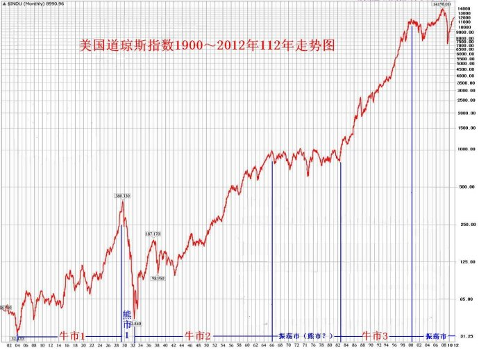

第76篇•教你炒股系列6：沪深股市运行特点（3）
谷为陵
3、股市的四种长期运行趋势
我们常说股市的长期趋势会怎样怎样，那什么是长期呢？其实，长期并无严格的定义。在美国市场，长期应该是指10年以上，而在A股市场，5年以上就算是长期。我认为，要研究A股市场的长期趋势，时间太短肯定不准，但太长又会脱离A股市场的实际情况，因此，我还是选择10年作为长期的时间标准。
若按照10年作为长期的时间标准，那么，股市在这10年的某一种单一趋势（上涨、下跌、横盘）可分为四种形态：一是长期上涨，即持续10年以上的长期大牛市；二是长期大震荡，即在10年内股市出现暴涨暴跌；三是长期窄幅振荡，即持续10年以上的长期平衡市；四是长期下跌，即持续10年以上的长期大熊市。我们分别讨论：
（1）长期大牛市
持续10年以上的长期大牛市并不罕见，美国道琼斯指数、日经225指数、香港恒生指数都曾出现过持续时间超过10年甚至20年的长期大牛市，股指涨了十几倍至几十倍。
但表现最突出还应该算是道琼斯指数。道琼斯指数自1900年设立以来，历经112年，其指数从当初的60点左右涨至现在的12000多点，涨幅近200倍。在这112年中，道琼斯指数出现了三轮长期大牛市：
第1轮是1903年10月至1929年10月，历时26年，道琼斯指数由32点涨到380点，涨幅11倍。
第2轮是1942年至1966年，历时24年，道琼斯指数由100点涨到1000点，涨幅9倍。
第3轮是1982年至2007年，历时25年，道琼斯指数由900点涨到14000点，涨幅15倍。
道琼斯指数百年走势图（对数坐标图）如下所示：

从上图可以看出一个非常奇怪的现象，那就是112年来的道琼斯指数，可以看出三轮非常明显的长期大牛市，以及1929年至1932年因股市崩盘造成的大熊市，那轮大熊市股市下跌了89%，但是，其后再也找不到大熊市的踪迹了。也就是说，道琼斯指数自1929年崩盘后，就一直处于一个超长期的超级大牛市之中。至于1967年至1982年长达15年的振荡市，可以不算是牛市，但也绝不是通常意义上的大熊市，因为在此期间,股市在1971年至1975年的最大跌幅也只有30%。
通过上图你想到了什么？
我想到了巴菲特。巴菲特是1955年于道琼斯指数250点左右入市的，他一进入市场，就赶上了一轮10年的大牛市。正是这10年的牛市，让巴菲特完成了原始积累。他也是在1966年股市见顶时解散了原先的巴菲特合伙公司，而收购了伯克夏哈撒韦公司，这成为他日后起飞的跳板。1967年至1982年长达15年的振荡市，并非大熊市，股市最大跌幅只有30%，使巴菲特得以保住他的最初成果，并且逐步壮大力量。他的运气实在是太好了，至1982年后，他又赶上了美国股市历时最长、涨幅最大的一轮大牛市，助他成为了世人仰慕的股神。
如果巴菲特不是身处美国股市，他会是怎样的结果？有人问过他这样的问题，对此，巴菲特回答道，他的成功是难以复制的，因为他生活在美国，美国是独一无二的。我想，要是他生活在中国股市，在短短的20年时间就连续遭遇四轮每轮跌幅达70%的大熊市，那他面临的将不是能否成为股神的问题，而是要不要改行做别的问题了。江湖如此险恶，哪有长期价值投资者的立身之地？
（2）长期大震荡市
所谓长期大震荡，就是指数在10年或以上时间里，呈现多次的暴涨暴跌的走势。其每一轮暴涨，指数涨幅在200%以上，其每一轮暴跌，指数跌幅在50%以上。
毫无疑问，沪深股市属于这样的市场。当然，暴涨暴跌并非沪深股市的专利，这十几年来，还有其它一些市场也出现了这样的走势。比如，德国的DAX指数，台湾加权指数等。
（3）长期窄幅振荡市
所谓长期窄幅振荡市，就是指数在10年或以上时间里，呈现上下波动不大的箱型走势。其在箱体振荡时的每一轮上涨行情涨幅不超过200%，其每一轮下跌的跌幅不超过50%。
道琼斯指数1967年至1982年就经历了一个长达15年的窄幅振荡市，这次长期平衡市是因为越战以及石油危机造成的石油价格暴涨，导致美国经济出现了长期滞涨。自1999年至今，道琼斯指数似乎又进入了另一轮窄幅振荡市，道琼斯指数一直在6500点至14000点之间振荡。还有，自2002年8月后，美国Nasdaq指数也基本上进入了长期窄幅振荡市况，该指数10年来一直在1100但至2800点之间振荡。
（4）长期下跌市
所谓长期下跌市，就是指数在10年或以上时间里，呈现持续下跌，不断创出新低的走势。长期大熊市是比较罕见的，最典型的就属日经225指数了，该指数自1989年底创出了39000点的最高点后，就一直下跌，直至2008年底创出6994点的新低。日经225指数在长达20年的时间里持续下跌，最大跌幅达到了82%，这可真算得上是不可思议的超级大熊市了。
股市的四种长期趋势，对于投资者的投资行为以及收益会产生何种影响呢？